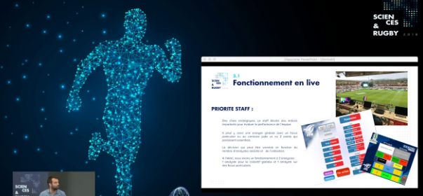

Technology.org

Intelligence Artificielle
The Tech Innovations Transforming Rugby Performance
L'IA permet désormais d'analyser en temps réel les patterns de jeu adverses et de proposer des ajustements tactiques à la mi-temps. Les algorithmes de machine learning traitent des milliers de séquences pour identifier les failles défensives.